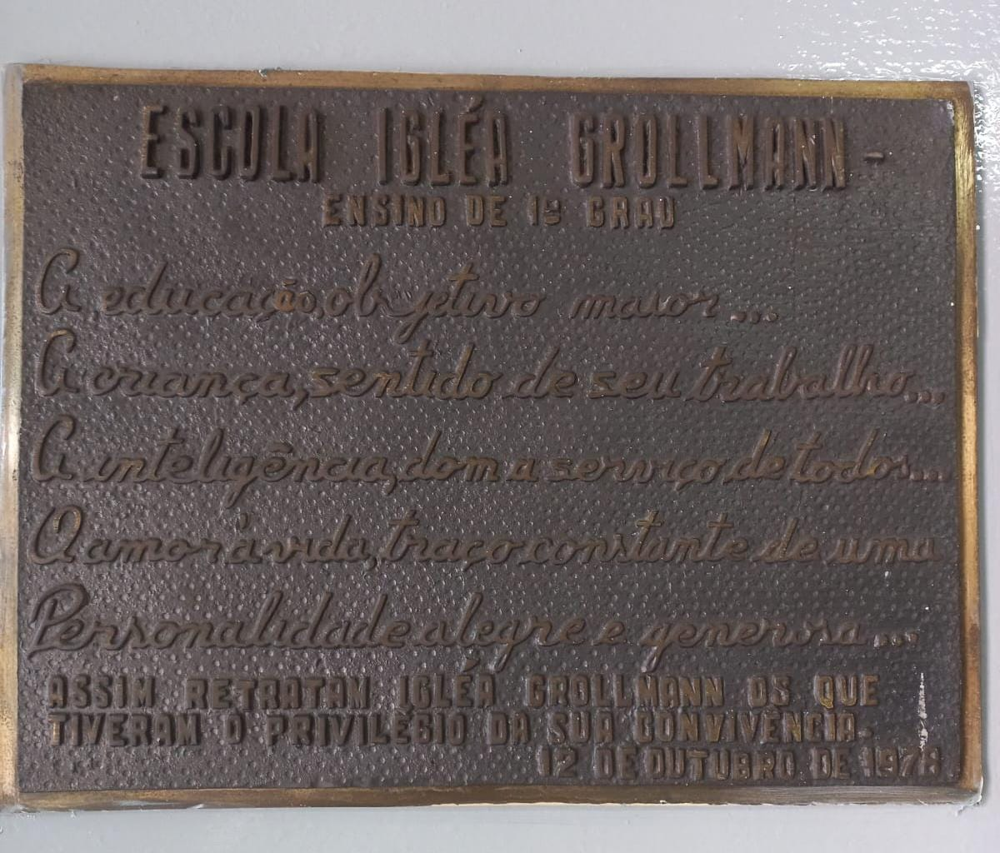
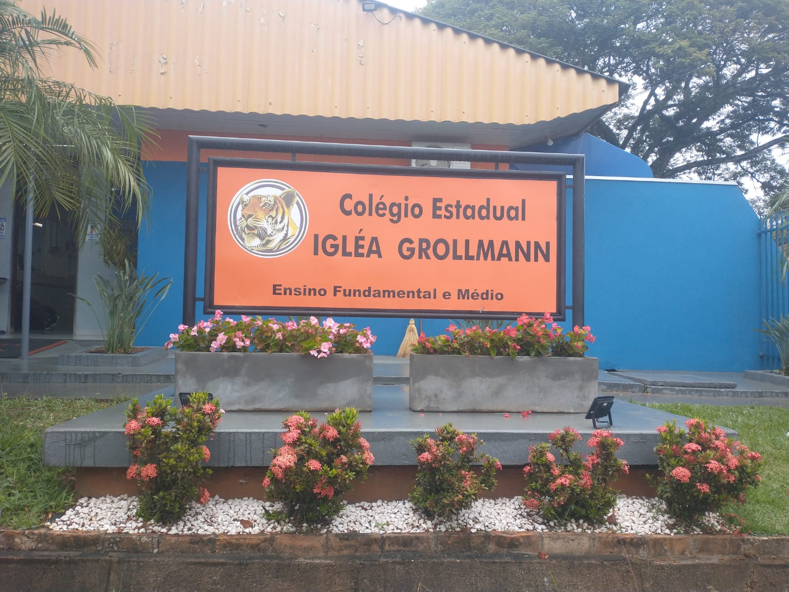
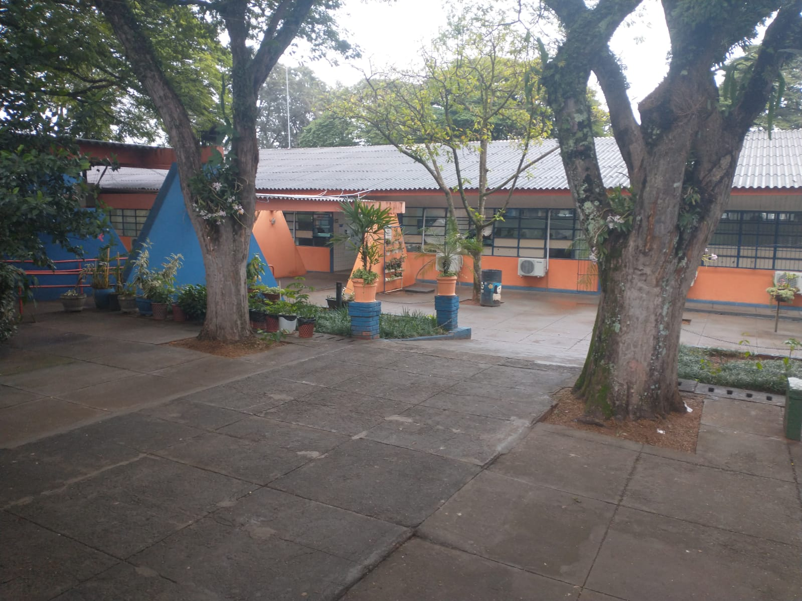
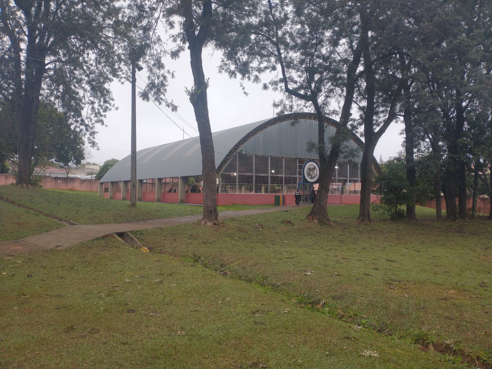
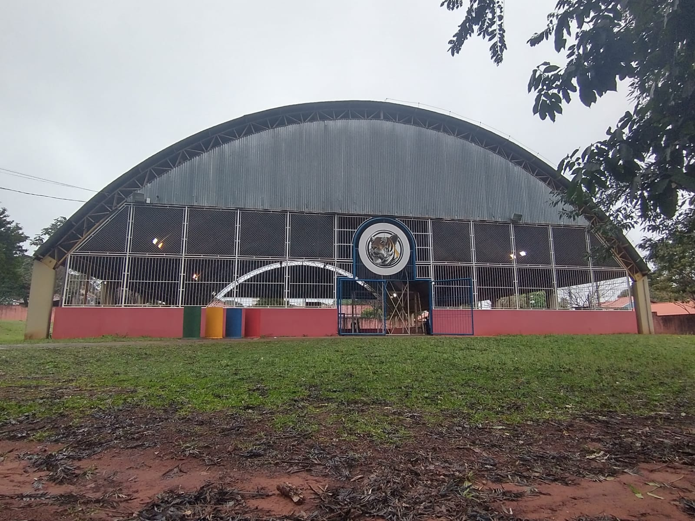
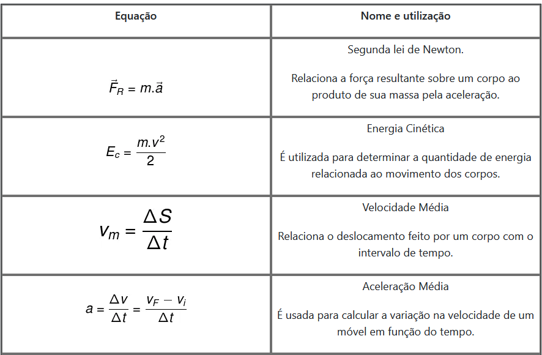
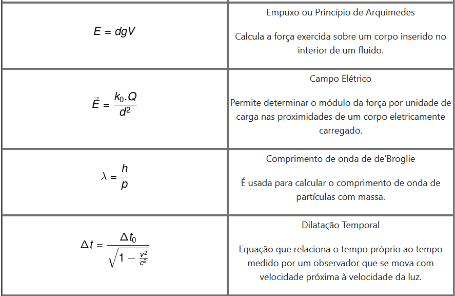

Essas são algumas das imagens de nossa escola:
    Placa de Inauguração Frente da escola Pátio Ginásio de Esportes Ginásio de Esportes
Física é uma ciência natural que estuda as propriedades da matéria e da energia, estabelecendo relações entre elas. Baseia-se em experimentações, observações e formulações matemáticas voltadas à interpretação de questões fundamentais da natureza, relativas a um grande número de fenômenos, compreendidos desde escalas subatômicas até macrocósmicas.
A palavra Física deriva do grego antigo φύσις, que significa “natureza”. É uma ciência fundamentada em observações experimentais e em leis matemáticas. Seu principal intuito é explicar os variados fenômenos resultantes das interações entre matéria, movimento e energia. A Física é uma das mais antigas disciplinas e teve seu início marcado por observações astronômicas feitas por povos antigos do mundo todo. Intenta-se a explicar o funcionamento do Universo da maneira mais fundamental possível, pautando-se nos preceitos da metodologia científica e da linguagem matemática.
A Física é uma ciência muito vasta que, por razões históricas, é subdividida em diferentes áreas. A primeira divisão da Física está relacionada à Física Clássica e à Física Moderna. A Física Clássica é aquela que envolve fenômenos que ocorrem em escalas macroscópicas, como movimento dos astros e projéteis, funcionamento de máquinas térmicas, acústica, óptica geométrica, hidrostática, eletrostática, eletrodinâmica clássica, etc. Esse ramo da Física foi desenvolvido ao longo da história por grandes nomes, como Isaac Newton, Galileu Galilei, Johannes Kepler, Lorde Kelvin, entre outros.
A Física Moderna, por sua vez, é responsável pela descrição de fenômenos microscópicos, como aqueles que acontecem em escalas subatômicas, cuja ordem é inferior aos nanômetros. Também atribui-se à Física Moderna o estudo de corpos que se movem com velocidades relativísticas, ou seja, próximas à velocidade da luz. Dessa forma, foram explicados fenômenos como decaimento radioativo, fissões e fusões nucleares, efeito fotoelétrico, etc.
Considera-se que a Física Moderna tenha surgido no século XX com a descoberta do raio X por Wilhelm Röntgen, em 1895; da radioatividade por Antoine Becquerel, em 1896; da quantização das ondas eletromagnéticas por Max Planck, em 1900; da relatividade especial por Albert Einstein, em 1905; e da teoria atômica por Niels Bohr, em 1913.
A Mecânica Quântica, por sua vez, surgiu em 1926 pelas mãos de físicos como Werner Heisenberg e Erwin Schroedinger, os grandes responsáveis, respectivamente, pela determinação do Princípio da Incerteza e pelo desenvolvimento da equação de Schroedinger. A Mecânica Quântica é uma das teorias mais bem-sucedidas da Física. Diversos experimentos realizados até os dias atuais mostram que as previsões obtidas por essa complexa área da Física estão corretas, mesmo quando essas previsões mostravam-se contra-intuitivas.
Física Clássica
Algumas Fórmulas da Física:
 Referência biliográfica: HELERBROCK, Rafael. "Física"; Brasil Escola. Disponível em: https://brasilescola.uol.com.br/fisica. Acesso em 10 de agosto de 2022.
| Número de Alunos | Período | Total |
|---|---|---|
| 604 | Vespertino | |
| 786 | Matutino | 1390 |
| Turno | Turma | Sala | Matutino | 9ºA | 6 |
|---|---|---|
| Matutino | 9ºB | 7 |
| Matutino | 9ºC | 8 |
| Matutino | 9ºD | 9 |
| Matutino | 8ºA | 10 |
| Matutino | 8ºB | 3 |
| Matutino | 8ºC | 2 |
| Matutino | 8ºD | 1 | Vespertino | 8ºE | 7 |
| Vespertino | 7ºA | 1 |
| Vespertino | 7ºB | 2 |
| Vespertino | 7ºC | 3 |
| Vespertino | 7ºD | 4 |
| Vespertino | 6ºA | 6 |
| Vespertino | 6ºB | 8 |
| Vespertino | 6ºC | 9 |
| Vespertino | 6ºD | 10 |
| Turno | Turma | Sala |
|---|---|---|
| Matutino | 1ºA | 4 |
| Matutino | 1ºB | 5 |
| Matutino | 1ºC | 21 |
| Matutino | 1ºD | 12 |
| Matutino | 2ºA | 17 |
| Matutino | 2ºB | 18 |
| Matutino | 2ºC | 19 |
| Matutino | 3ºA | 20 |
| Matutino | 3ºB | 21 |
| Matutino | 3ºC | 13 |
O que você achou do site?
| Nome: | nº: |
|---|---|
| Felipe Augusto Martins Liberati | 05 |
| Felipe Louzada | 06 |
| Gustavo de Almeida | 09 |
| Juan Pablo | 16 |
Site feito por: Felguto